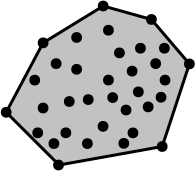
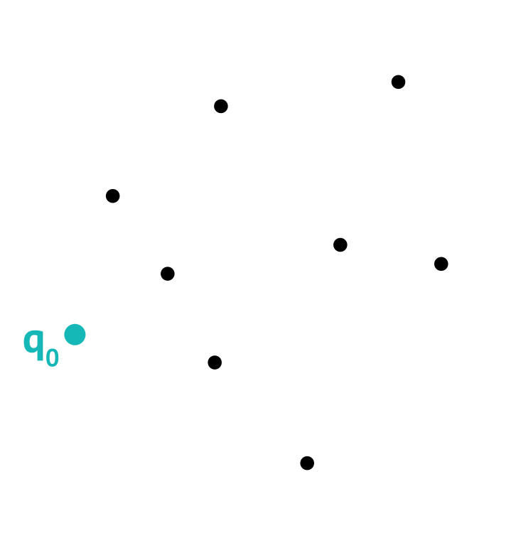
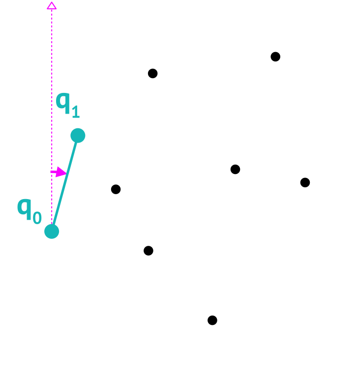
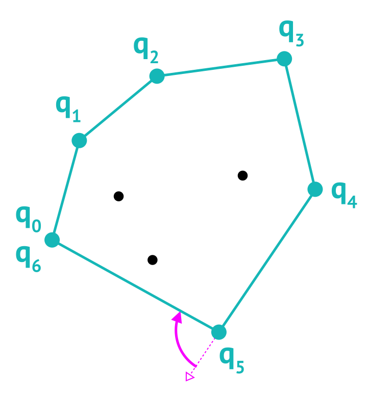
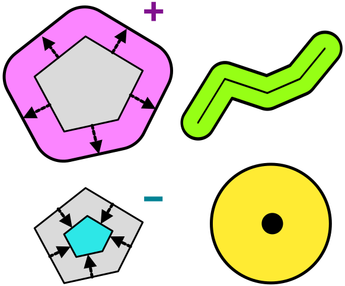

Векторный анализ
Основы геоинформатики. Лекция 5
Пространственные отношения
- Отношение
-
Свойство двух или более объектов, выраженное в наличии или отсутствии определенной связи между ними.
- Пространственное отношение
-
Отношение пространственных объектов, которое зависит от их местоположения.
Предикат
Формальным представлением отношения является предикат — функция, определенная на множестве объектов и принимающая для их упорядоченного набора значение 1 (ИСТИНА) или 0 (ЛОЖЬ). Предикаты пространственных отношений называются пространственными.
Пространственные отношения
К основным видам пространственных отношений относятся:
Метрические — определяются расстояниями между объектами.
Топологические — определяются пересечениями объектов.
Дирекционные — определяются направлениями между объектами
Пространственные предикаты
Функции, которые устанавливают наличие метрических, топологических и дирекционных отношений, являются пространственными предикатами.
Расстояния
Евклидово расстояние
Используется в плоских прямоугольных системах координат
\[ d(A,B) = \sqrt{(x_A - x_B)^2 + (y_A - y_B)^2} \]
Ограничения
Евклидово расстояние наследует искажения проекции, а также предполагает, что объекты доступны напрямую.

Расстояния
Манхэттенское расстояние
Аппроксимирует реальное расстояние между точками в транспортных сетях с ортогональной планировкой.
\[ d(A,B) = |x_A - x_B| + |y_A - y_B| \]
Ограничения
Даёт преимущества только в том случае когда дорожная сеть ориентирована по направлениям осей \(X\) и \(Y\).

Расстояния
Геодезические расстояние
Кратчайшее расстояние между точками на поверхности эллипсоида. Для сферы:
\[ d(A,B) = \\ \arccos ( \sin \phi_A \sin \phi_B + \\ \cos \phi_A \cos \phi_B \cos(\lambda_A - \lambda_B)) \]

Геодезическая линия и ортодромия
Линия кратчайшего расстояния на эллипсоиде — геодезическая.
Линия кратчайшего расстояния на сфере — ортодромия.
Метрические отношения
Метрические отношения устанавливают расстояния между объектами с использованием выбранной метрики.

Метрики
Для оценки расстояний может использоваться множество других метрик. Они не исчерпываются приведенными примерами.
Топологические отношения
Топологические отношения можно описать в терминах пересечения трех областей каждого объекта (Egenhofer и Franzosa 1991):
Внутренняя область (\(A^o\))
Граница (\(\partial A\))
Внешняя область (\(A^-\))

Матрица Эгенхофера 9-IM содержит 0 или 1 в зависимости от наличия или отсутствия пересечения:
\[ \begin{bmatrix} A^o \cap B^o \ne \emptyset & A^o \cap \partial{B} \ne \emptyset & A^o \cap B^- \ne \emptyset \\ \partial{A} \cap B^o \ne \emptyset & \partial{A} \cap \partial{B} \ne \emptyset & \partial{A} \cap B^- \ne \emptyset \\ A^- \cap B^o \ne \emptyset & A^- \cap \partial{B} \ne \emptyset & A^- \cap B^- \ne \emptyset \end{bmatrix} \]
Топологические отношения
- Не пересекает
-
Внутренняя область и граница A не имеют пересечений с внутренней областью и границей B
\[ \begin{bmatrix} 0 & 0 & \bf{1} \\ 0 & 0 & \bf{1} \\ \bf{1} & \bf{1} & \bf{1} \\ \end{bmatrix} \]
Применение
Используется чтобы установить, что объекты никак не соприкасаются в пространстве.

Топологические отношения
- Равен
-
Границы, внутренние и внешние области A пересекаются с аналогичными элементами B
\[ \begin{bmatrix} \bf{1} & 0 & 0 \\ 0 & \bf{1} & 0 \\ 0 & 0 & \bf{1} \\ \end{bmatrix} \]
Применение
Используется чтобы установить, что объекты совпадают.

Топологические отношения
- Перекрывает
-
Все компоненты A пересекаются со всеми компонентами B
\[ \begin{bmatrix} \bf{1} & \bf{1} & \bf{1} \\ \bf{1} & \bf{1} & \bf{1} \\ \bf{1} & \bf{1} & \bf{1} \\ \end{bmatrix} \]
Применение
Используется чтобы установить, что объекты имеют частичное перекрытие.

Топологические отношения
- Касается
-
Внутренняя область и граница A не пересекатся с внутренней областью B и наоборот.
\[ \begin{bmatrix} 0 & 0 & \bf{1} \\ 0 & \bf{1} & \bf{1} \\ \bf{1} & \bf{1} & \bf{1} \\ \end{bmatrix} \]
Применение
Используется чтобы установить, что объекты касаются друг друга снаружи.

Топологические отношения
- Покрывает
-
Внешняя область A не пересекается с границей и внутренней областью B, а граница A не пересекается с внутренней областью B.
\[ \begin{bmatrix} \bf{1} & \bf{1} & \bf{1} \\ 0 & \bf{1} & \bf{1} \\ 0 & 0 & \bf{1} \\ \end{bmatrix} \]
Применение
Используется чтобы установить, что один объект содержит внутри себя другой объект, который касается его границы.

Топологические отношения
- Покрыт
-
Внешняя область B не пересекается с границей и внутренней областью A, а граница B не пересекается с внутренней областью A.
\[ \begin{bmatrix} \bf{1} & 0 & 0 \\ \bf{1} & \bf{1} & 0 \\ \bf{1} & \bf{1} & \bf{1} \\ \end{bmatrix} \]
Применение
Используется чтобы установить, что один объект содержится внутри другого объекта и касается его границы.

Топологические отношения
- Содержит
-
Внешняя область и граница A не пересекается с границей и внутренней областью B, остальные пересечения присутствуют.
\[ \begin{bmatrix} \bf{1} & \bf{1} & \bf{1} \\ 0 & 0 & \bf{1} \\ 0 & 0 & \bf{1} \\ \end{bmatrix} \]
Применение
Используется чтобы установить, что один объект содержит внутри себя другой объект.

Топологические отношения
- Внутри
-
Внешняя область и граница B не пересекается с границей и внутренней областью A, остальные пересечения присутствуют.
\[ \begin{bmatrix} \bf{1} & 0 & 0 \\ \bf{1} & 0 & 0 \\ \bf{1} & \bf{1} & \bf{1} \\ \end{bmatrix} \]
Применение
Используется чтобы установить, что один объект содержится внутри другого объекта.

Топологические отношения
- Пересекает
-
Внутренняя область или граница A пересекается с внутренней областью или границей B.

Пересдача контрольной работы №1
| Группа | Преподаватели | Пересдача |
|---|---|---|
| 206, 207, 209, 213, 214, 217 | Грищенко, Карпачевский, Ушакова, Энтин | Четверг 21 марта, 17:00, ауд. 1903 |
| 201, 202, 204, 210, 212, 218, 221, 222 | Аляутдинов, Титов | Вторник 26 марта, 17:30, ауд. 1903 |
Дирекционные отношения
Угловая (коническая) модель базируется на вычислении угла направления с точки A в точку B.
- Как правило используется дирекционный угол или азимут.
Ограничения
Применима только для точечных объектов

Дирекционные отношения
Прямоугольная модель разделяет плоскость на 9 секторов относительно прямоугольника, ограничивающего объект.
- Используется минимальный ограничивающий прямоугольник со сторонами, параллельными осям координат.
Ограничения
Дает качественную оценку направления по сторонам света

Дирекционные отношения
Проективная модель используется для оценки направления на третий объект C относительно двух других объектов A и B.
- Плоскость делится на 4 “конуса”, а также область между объектами.
Ограничения
Дает качественную оценку направления и применяется для движущихся объектов

Пространственные запросы
Пространственные запросы аналогичны атрибутивным, но в качестве условия используют пространственные отношения.

Пространственные запросы


Длина / периметр
Рассчитываются как сумма длин отрезков, составляющих контур объекта:
\[ L =\\ \sum_{i=0}^{n-2}\sqrt{(x_{i+1}-x_i)^2 + (y_{i+1}-y_i)^2} \]
Полигон
У полигона последняя точка должна иметь такие же координаты, как и первая.

Площадь
Рассчитывается как сумма площадей трапеций, ограниченных сверху отрезками, составляющими контур объекта:
\[ A = \frac{1}{2}\sum_{i=0}^{n-2} \underbrace{(y_{i+1}+y_{i})}_{\texttt{основания}}\underbrace{(x_{i+1}-x_{i})}_{\texttt{высота}} \]
Отрицательная площадь
Трапеции, у которых \(i+1\)-я точка имеет меньший X, чем \(i\)-я, имеют отрицательную площадь.

Принадлежность точки полигону
Луч, выпущенный из точки в направлении оси \(X\), пересекает границу полигона нечетное количество раз.

Обратите внимание
Если луч пересекает одну из вершин полигона, и оба примыкающих к ней отрезка находятся по одну сторону от луча, это засчитывается как два пересечения.
Применение
Данная операция активно используется при оценке топологических отношений — например, для выполнения пространственных запросов.
Ограничивающий прямоугольник
Ограничивающий прямоугольник определяет охват данных по осям координат.
Задаётся координатами углов:
левого нижнего \((x_{min}, y_{min})\)
правого верхнего \((x_{max}, y_{max})\)

Применение
Ограничивающий прямоугольник является важным элементом метаданных — описания пространственных данных, но также используется и в аналитических задачах.
Выпуклая оболочка
Выпуклая оболочка — наименьший по площади выпуклый многоугольник, покрывающий заданное множество точек.
Выпуклое множество
Множество, в котором отрезок, соединяющий любые две точки также находится внутри этого множества.


Применение
Выпуклые оболочки используются для восстановления ареалов по точечным измерениям. Также выпуклая оболочка является границей триангуляционного покрытия.
Выпуклая оболочка
Известный метод построения — алгоритм Джарвиса (Jarvis 1973):
- Найти точку \(q_0\) с минимальной координатой \(X\).

Выпуклая оболочка
Известный метод построения — алгоритм Джарвиса (Jarvis 1973):
Найти точку \(q_0\) с минимальной координатой \(X\).
Найти точку \(q_1\) с минимальным дир. углом относительно \(q_0\).

Выпуклая оболочка
Известный метод построения — алгоритм Джарвиса (Jarvis 1973):
Найти точку \(q_0\) с минимальной координатой \(X\).
Найти точку \(q_1\) с минимальным дир. углом относительно \(q_0\).
Пока \(q_k \neq q_0\) начиная с \(k=1\)
найти точку \(q_{k+1}\) с минимальным углом поворота относительно прямой, проходящей через \(\overline{q_{k-1}q_k}\);
\(k = k + 1\).
\(k = 2,~q_2 \neq q_0\)

Выпуклая оболочка
Известный метод построения — алгоритм Джарвиса (Jarvis 1973):
Найти точку \(q_0\) с минимальной координатой \(X\).
Найти точку \(q_1\) с минимальным дир. углом относительно \(q_0\).
Пока \(q_k \neq q_0\) начиная с \(k=1\)
найти точку \(q_{k+1}\) с минимальным углом поворота относительно прямой, проходящей через \(\overline{q_{k-1}q_k}\);
\(k = k + 1\).
\(k=3,~q_3 \neq q_0\)

Выпуклая оболочка
Известный метод построения — алгоритм Джарвиса (Jarvis 1973):
Найти точку \(q_0\) с минимальной координатой \(X\).
Найти точку \(q_1\) с минимальным дир. углом относительно \(q_0\).
Пока \(q_k \neq q_0\) начиная с \(k=1\)
найти точку \(q_{k+1}\) с минимальным углом поворота относительно прямой, проходящей через \(\overline{q_{k-1}q_k}\);
\(k = k + 1\).
\(k=4,~q_4 \neq q_0\)

Выпуклая оболочка
Известный метод построения — алгоритм Джарвиса (Jarvis 1973):
Найти точку \(q_0\) с минимальной координатой \(X\).
Найти точку \(q_1\) с минимальным дир. углом относительно \(q_0\).
Пока \(q_k \neq q_0\) начиная с \(k=1\)
найти точку \(q_{k+1}\) с минимальным углом поворота относительно прямой, проходящей через \(\overline{q_{k-1}q_k}\);
\(k = k + 1\).
\(k=5,~q_5 \neq q_0\)

Выпуклая оболочка
Известный метод построения — алгоритм Джарвиса (Jarvis 1973):
Найти точку \(q_0\) с минимальной координатой \(X\).
Найти точку \(q_1\) с минимальным дир. углом относительно \(q_0\).
Пока \(q_k \neq q_0\) начиная с \(k=1\)
найти точку \(q_{k+1}\) с минимальным углом поворота относительно прямой, проходящей через \(\overline{q_{k-1}q_k}\);
\(k = k + 1\).
\(k=6,~q_6 = q_0\)

Выпуклая оболочка
Известный метод построения — алгоритм Джарвиса (Jarvis 1973):
Найти точку \(q_0\) с минимальной координатой \(X\).
Найти точку \(q_1\) с минимальным дир. углом относительно \(q_0\).
Пока \(q_k \neq q_0\) начиная с \(k=1\)
найти точку \(q_{k+1}\) с минимальным углом поворота относительно прямой, проходящей через \(\overline{q_{k-1}q_k}\);
\(k = k + 1\).
Восстановить полигон по точкам \(q_0, q_1, … q_k\), где \(k > 2\) и \(q_0 = q_k\).

Диаграмма Вороного

- Диаграмма Вороного
-
Диаграмма Вороного конечного множества точек \(S\) на плоскости представляет такое разбиение плоскости, при котором каждая область этого разбиения образует множество точек, более близких к одному из элементов множества \(S\), чем к любому другому элементу множества.
Применение
Диаграмма Вороного используется при моделировании зон влияния объектов.
Диаграмма Вороного
Пример: количество заведений общественного питания в окрестностях станций метро
Центроид и срединная ось
Центроид — точка, представляющая среднее значение координат полигона без учета последней точки (которая совпадает с первой):
\[ C = \Bigg(\frac{1}{n-1}\sum_{i=0}^{n-2} x_i, \frac{1}{n-1}\sum_{i=0}^{n-2} y_i \Bigg) \]
Срединная ось — линия равноудаленная от границ полигона.

Применение
Используются для картографической генерализации.
Буферные зоны
Буферная зона — это множество точек, располагающихся в пределах заданного расстояния относительно объекта.
буфер точки представляет собой круг;
буфер полигона может быть положительным и отрицательным;
буфер точки или линии всегда положительный.

Применение
Используются при анализе влияния. Например, определения водоохранных зон.
Буферные зоны
Пример: кафе в 100-метровой буферной зоне р. Москвы

Буферные зоны
Пример: изменение количества кафе на \(1~км^2\) при удалении от станции метро (расширение буферной зоны).

Преобразование моделей объектов
Между любыми моделями пространственных объектов возможны взаимные преобразования.

Применение
Например, можно получить из полигона заповедника поворотные точки его границы. Или восстановить линию почвенного профиля по точкам разрезов.
Мультигеометрия
При конвертации полигона или линии в точки обычно получается мультиточечный объект.
Преобразования мультиобъектов
В некоторых случаях требуется преобразовать мультиобъект в множество отдельных объектов и наоборот.

Применение
Например, требуется провести анализ в пределах отдельных островов архипелага.
Слияние (объединение по признаку)
Слияние (объединение по признаку) — это объединение геометрий пересекающихся объектов с одинаковым значением атрибута.

Применение
Слияние всегда сопровождает агрегирование атрибутов и используется при укрупнении единиц картографирования. Также может применяться при векторизации, когда объект создается по фрагментам, которые далее необходимо объединить.
Оверлей
Оверлей — пространственное наложение двух или более пространственных объектов, при котором образуется их геометрическая и атрибутивная композиция.

Оверлей — одна из самых полезных геометрических операций.
Оверлей
Пересечение используется для обрезки данных по указанной области.
Область обрезки может быть произвольной, но чаще всего используется ограничивающий прямоугольник
Clip
Обрезка данных (clip) является частным случаем пересечения с полигональным объектом, при котором наследуются только атрибуты обрезаемых объектов.

Оверлей
Пространственная ассоциация — взаимосвязь местоположения объектов — также может быть исследована путем оверлея.
Для двух классов \(A\) и \(B\):
односторонняя ассоциация:
\(|A \cap B|/ |A|\)двусторонняя ассоциация:
\(|A \cap B| / |A \cup B|\)

Для анализа ассоциации двух явлений — например типов почв и рельефа — состоящих из множества классов, используются специальные индексы. Например, индекс Крамера V.
Оверлей
Пространственные соотношения различных типов объектов в пределах заданных участков также определяются методом оверлея.
Доля класса \(A\) в пределах участка \(C\):
\[ |A \cap C|/ |C| \]

Пример
Модели формирования речного стока работают на растровой сетке и требуют задания соотношения типов подстилающей поверхности для каждой ячейки.
Отношение геометрии и атрибутов
В геореляционных базах данных допустимое множество операций над атрибутом также зависит от того как он получен относительно пространства.
Опора измерений — физический объем, подвергнутый измерению.
Экстенсивные атрибуты
Пропорциональны опоре измерений. Суммируются при объединении территорий и делятся при разделении.

Интенсивные атрибуты
Не пропорциональны опоре измерений. Осредняются при объединении территорий и остаются прежними при разделении.

Оверлей
Интерполяция, взвешенная на площадь — способ пересчета количественного показателя между сетками учетных единиц.
Для каждой из \(q\) выходных единиц \(T_j\), средневзвешенное значение \(Y_i\) извлеченное из \(p\) исходных единиц \(S_i\), равно:
\[ \hat{Y_j}(T_j) = \sum_{i=1}^p w_{ij} Y_i(S_i) \]
экстенсивная: \(w_{ij} = \frac{|T_j \cap S_i|}{|S_i|}\)
интенсивная: \(w_{ij} = \frac{|T_j \cap S_i|}{|T_j|}\)

Словарик (часть 1)
Пространственное отношение
Евклидово расстояние
Геодезическое расстояние
Метрическое отношение
Топологическое отношение
Дирекционное отношение
Пространственный запрос
Огранич. прямоугольник
Выпуклая оболочка
Spatial relation
Euclidean distance
Geodesic distance
Metric relation
Topological relation
Directional relation
Spatial query
Bounding box
Convex hull
Словарик (часть 2)
Диаграмма Вороного
Центроид
Срединная ось
Буферная зона
Слияние
Оверлей
Обрезка
Интерполяция, взвешенная на площадь
Voronoy diagram
Centroid
Medial axis
Buffer
Dissolve
Overlay
Clip
Area-weighted interpolation
Библиография
Egenhofer, Max J., и Robert D. Franzosa. 1991. «Point-set topological spatial relations». International Journal of Geographical Information Systems 5 (2): 161–74. https://doi.org/10.1080/02693799108927841.
Jarvis, R.A. 1973. «On the Identification of the Convex Hull of a Finite Set of Points in the Plane». Information Processing Letters 2 (1): 18–21. https://doi.org/10.1016/0020-0190(73)90020-3.